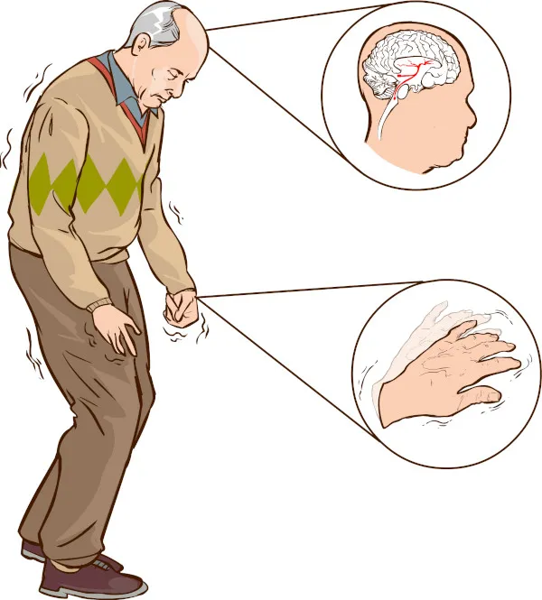

o cantor Ozzy osbourne, Famoso Por ser da Banda Black Sabbath, Morreu de Parkinson, mas pô, pesquisei no google
Mal De Parkinson(ou MDP),o que é?

Mal De Parkinson é uma condição neurodegenerativa progressiva que afeta principalmente o sistema nervoso, levando a problemas de movimento.